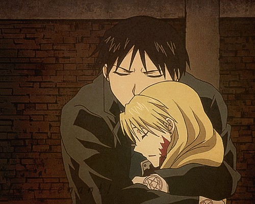
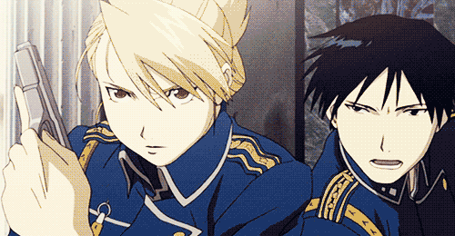
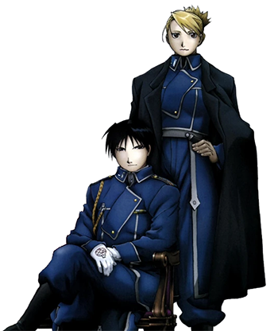
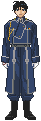
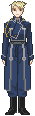
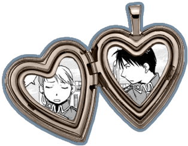

royai

god i fucking LOVE THEMMMM MY PARENTSSSS i dont think i've ever seen such subtle but beautiful and powerful demostrations of love in any other anime, not even in romance ones... that one scene where they're talking over the phone and he immediatly notices something is wrong means so much to me LOL. the way roy is so perceptive when it comes to her safety and wellbeing KILLS meeeee, all the little ways he shows affection towards her are just the cutest ever... i love the way they can communicate without words, almost read each others minds. they are both bad at talking about feelings (maybe riza is a bit worse LOL) but it never feels like many words are needed between them. they have such a deep connection, it's really like there is no other person in the world who could ever understand them better than they understand each other.

i only watched brotherhood so this might be diferent in other media (i plan to read the manga and watch 03 at some point) but i would've really loved something to happen w them at the end. not even asking for a perfect happy ending, just some sort of closure? i know they can't just get married because of laws and blah blah but i would've still loved to see maybe one last scene of them talking about the future or something... also since this is roy and riza we're talking about, i am unable to believe that they couldn't keep a secret relationship if they wanted to lol. but i also understand that not having a happy ending is one of the consequences for their actions, as frustrating as that might be. either way the show does not fail in making it clear that they are soulmates and that nothing could ever separate them so i think i can live w that..





some royai fanfics that made me scream cry and/or throw up: